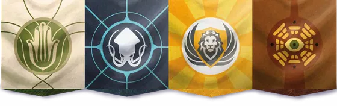

The Paths
Select the sets on the table. Every step, ruling and script below adapts to your choices.
Setup
Follow the steps in order. Each cites its official source.
Components
Every component the rulebooks picture for the sets, modules and player count you’ve selected, with its count. Tap a picture to enlarge it.
Rules Reference
Tap a heading to open it. Contents adapt to your sets, modules and player count.
Search the Rulebooks
Full-text search across the Essential Edition rulebook and every selected expansion (plus the solo rulebook in solo games).